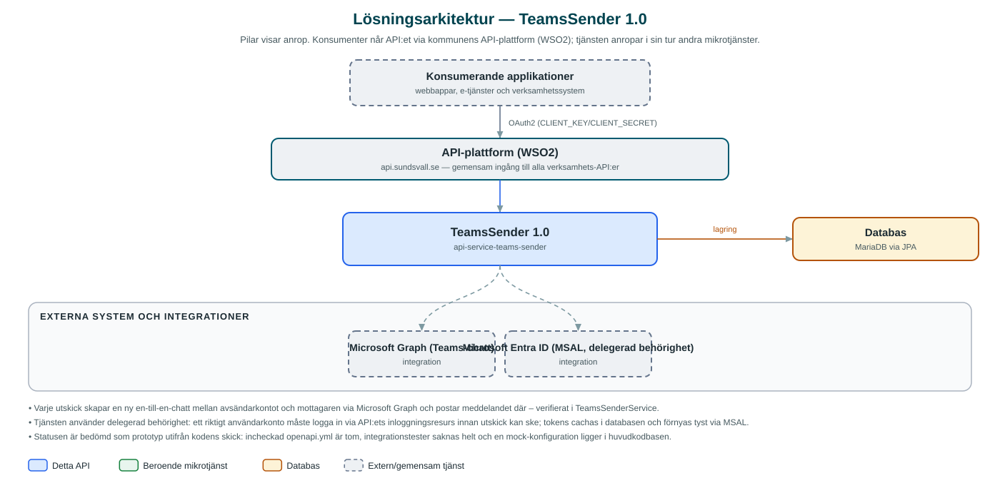

TeamsSender
Skickar chattmeddelanden i Microsoft Teams till enskilda medarbetare, som en kanal för meddelanden från kommunens meddelandetjänst.
Om API:et
TeamsSender gör det möjligt för kommunens applikationer att nå medarbetare direkt i Microsoft Teams. Tjänsten skapar en en-till-en-chatt mellan en konfigurerad avsändaranvändare och mottagaren och postar meddelandet där, via Microsoft Graph. Enligt README är tjänsten tänkt som en kanal för meddelanden från kommunens meddelandetjänst (Messaging).
Autentiseringen bygger på delegerad behörighet i Microsoft Entra ID: en avsändaranvändare loggar in via en inloggningsslinga i API:et (inloggning/callback med authorization code-flöde via MSAL), varefter tokens cachas i en databas och förnyas tyst vid utskick. Azure-konfigurationen läggs upp per kommun (municipalityId), så olika kommuner kan använda olika Entra ID-klienter och avsändarkonton.
Tjänsten är i ett tidigt skede: den incheckade OpenAPI-specifikationen är en tom fil, tester saknas och en mock-profil för Graph-anropen ligger med i huvudkoden. Repot ersätter ett äldre TeamsSender-repo (api-service-teams-sender-old) som numera enbart får beroendeuppdateringar.
Det här gör API:et
- Skicka Teams-meddelande – Ett anrop med mottagare och meddelandetext skapar en en-till-en-chatt mellan avsändarkontot och mottagaren och postar meddelandet.
- Inloggning av avsändarkonto – Inloggnings- och callback-resurser låter avsändaranvändaren logga in mot Microsoft och ger tjänsten tokens att skicka med.
- Tokencache i databas – MSAL-tokens lagras i MariaDB och förnyas tyst, så att avsändarkontot inte behöver logga in inför varje utskick.
- Konfiguration per kommun – Entra ID-uppgifter (klient, tenant, avsändarkonto) konfigureras per municipalityId, så flera kommuner kan dela tjänsten.
API-dokumentation
Ingen incheckad OpenAPI-specifikation hittades i källkodsförrådet; se källkoden för aktuell API-dokumentation.
Teknisk dokumentation
Nedan beskrivs hur tjänsten är uppbyggd, vilka andra tjänster den anropar och vad som krävs för att driftsätta den. Informationen är härledd ur källkoden och dess konfiguration på GitHub.
Arkitektur

API:et är en mikrotjänst (Java 25, Spring Boot via kommunens gemensamma tjänsteplattform dept44 (8.0.4), byggd med Maven). Konsumenter når tjänsten via kommunens gemensamma API-plattform (WSO2) på api.sundsvall.se – tjänsten anropas aldrig direkt. Lagring: MariaDB via JPA; används som tokencache för MSAL-inloggningen (inga Flyway-migrationer). Övriga integrationer som förekommer i koden: Microsoft Graph (Teams-chatt), Microsoft Entra ID (MSAL, delegerad behörighet).
Teknikstack
- Språk: Java 25
- Ramverk: Spring Boot via kommunens gemensamma tjänsteplattform dept44 (8.0.4), byggd med Maven
- Databas: MariaDB via JPA; används som tokencache för MSAL-inloggningen (inga Flyway-migrationer)
- Övrigt: Microsoft Graph SDK (inklusive beta-API), MSAL4J för Entra ID-inloggning, Resilience4j circuit breaker runt tokencachen
Beroenden till andra mikrotjänster
Inga anrop till andra mikrotjänster hittades i källkodens konfiguration.
Konfiguration och driftsättning
- Entra ID-konfiguration per kommun under azure.ad.<municipalityId>: avsändarkonto, client-id, tenant-id, client-secret, redirect-uri och inloggnings-URL
- Databasanslutning för tokencachen via miljövariabler (DB_URL, DB_USERNAME, DB_PASSWORD)
- Bas-URL för Microsoft Graph (standard https://graph.microsoft.com/v1.0)
- Spring-profilen mock ersätter tokentjänsten med statiska tokens för test utan Entra ID
- Anrop görs per kommun – municipalityId ingår i API-vägen
Noterbart ur källkoden
- Varje utskick skapar en ny en-till-en-chatt mellan avsändarkontot och mottagaren via Microsoft Graph och postar meddelandet där – verifierat i TeamsSenderService.
- Tjänsten använder delegerad behörighet: ett riktigt användarkonto måste logga in via API:ets inloggningsresurs innan utskick kan ske; tokens cachas i databasen och förnyas tyst via MSAL.
- Statusen är bedömd som prototyp utifrån kodens skick: incheckad openapi.yml är tom, integrationstester saknas helt och en mock-konfiguration ligger i huvudkodbasen.
- README beskriver tjänsten som en kanal för meddelandetjänsten, men koden har inga beroenden till andra kommun-API:er – enda integrationen är Microsoft Graph.
Källkod
Källkoden är öppen och finns hos Sundsvalls kommun på GitHub. I källkodsförrådet finns även instruktioner för att klona, konfigurera och starta tjänsten i egen miljö.